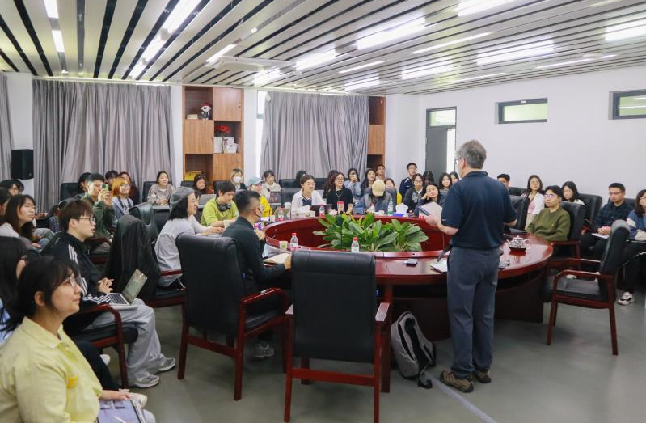

<td align="center" class="tbcolor10" colspan="2" valign="top">
<table border="0" cellpadding="0" height="100%" width="100%">
<tbody><tr><td align="right" height="35px" style="font-size:9pt">
<a href="javascript:window.close()" title="关闭本窗口">关闭窗口</a>｜<a href="print.asp?id=544683" target="_blank" title="打印本页内容">打印张贴版</a>    

</td></tr>
<tr>
<td align="center" height="500" valign="top">
<table border="0" cellpadding="4" cellspacing="0" height="100%" style="border-collapse: collapse;word-break:break-all;" width="86%">
<tbody><tr>
<td align="center" height="80px"><span style="font-family:方正小标宋简体;font-size: 25px;color: #C70E5C">“城市媒体与公共领域”学术讲座在传播学院举办</span></td>
</tr>
<tr>
<td align="center" height="50px" style="font-size: 9pt"><font color="#808080">传播学院　2025/4/3 15:55:00</font><br/> 
<font color="#F8F8F8" style="font-size:9pt">（钟沛基 2022280095）</font></td>
</tr>
<tr>
<td height="300" valign="top">
<p class="MsoNormal" style="margin-bottom:7.8500pt;mso-para-margin-bottom:0.5000gd;text-indent:30.0000pt;
mso-char-indent-count:2.0000;mso-layout-grid-align:none;text-autospace:ideograph-numeric;
mso-pagination:none;line-height:200%;"><span style="mso-spacerun:'yes';font-family:仿宋;line-height:200%;
font-size:15.0000pt;mso-font-kerning:1.0000pt;">2025年3月21日，华盛顿大学西雅图分校电影和媒体研究教授</span><span style="mso-spacerun:'yes';font-family:仿宋;line-height:200%;
font-size:15.0000pt;mso-font-kerning:1.0000pt;">Yomi Braester</span><span style="mso-spacerun:'yes';font-family:仿宋;line-height:200%;
font-size:15.0000pt;mso-font-kerning:1.0000pt;">(柏右铭)教授</span><span style="mso-spacerun:'yes';font-family:仿宋;line-height:200%;
font-size:15.0000pt;mso-font-kerning:1.0000pt;">受邀在传播学院进行了一场</span><span style="mso-spacerun:'yes';font-family:仿宋;line-height:200%;
font-size:15.0000pt;mso-font-kerning:1.0000pt;"><font face="仿宋">题为</font><font face="仿宋">“城市媒体与公共领域”</font></span><span style="mso-spacerun:'yes';font-family:仿宋;line-height:200%;
font-size:15.0000pt;mso-font-kerning:1.0000pt;"><font face="仿宋">（</font><font face="仿宋">“Urban Media and the Public Sphere”）</font></span><span style="mso-spacerun:'yes';font-family:仿宋;line-height:200%;
font-size:15.0000pt;mso-font-kerning:1.0000pt;">的学术讲座</span><span style="mso-spacerun:'yes';font-family:仿宋;line-height:200%;
font-size:15.0000pt;mso-font-kerning:1.0000pt;">，</span><span style="mso-spacerun:'yes';font-family:仿宋;line-height:200%;
font-size:15.0000pt;mso-font-kerning:1.0000pt;">本次讲座由</span><span style="mso-spacerun:'yes';font-family:仿宋;line-height:200%;
font-size:15.0000pt;mso-font-kerning:1.0000pt;">传播学院常江教授主持，</span><span style="font-family: 仿宋; font-size: 15pt; text-indent: 30pt;">吸引了众多师生前来聆听与交流。</span></p><p class="MsoNormal" style="margin-bottom:7.8500pt;mso-para-margin-bottom:0.5000gd;text-indent:30.0000pt;
mso-char-indent-count:2.0000;mso-layout-grid-align:none;text-autospace:ideograph-numeric;
mso-pagination:none;line-height:200%;"><span style="mso-spacerun:'yes';font-family:仿宋;line-height:200%;
font-size:15.0000pt;mso-font-kerning:1.0000pt;"><o:p></o:p></span></p><p class="MsoNormal" style="margin-bottom:7.8500pt;mso-para-margin-bottom:0.5000gd;text-indent:30.0000pt;
mso-char-indent-count:2.0000;mso-layout-grid-align:none;text-autospace:ideograph-numeric;
mso-pagination:none;line-height:200%;"><span style="mso-spacerun:'yes';font-family:仿宋;line-height:200%;
font-size:15.0000pt;mso-font-kerning:1.0000pt;">讲座伊始，常江教授首先对</span><span style="mso-spacerun:'yes';font-family:仿宋;line-height:200%;
font-size:15.0000pt;mso-font-kerning:1.0000pt;">Yomi Braester</span><span style="mso-spacerun:'yes';font-family:仿宋;line-height:200%;
font-size:15.0000pt;mso-font-kerning:1.0000pt;">教授的到来表示了热烈欢迎，并对</span><span style="mso-spacerun:'yes';font-family:仿宋;line-height:200%;
font-size:15.0000pt;mso-font-kerning:1.0000pt;">Yomi Braester</span><span style="mso-spacerun:'yes';font-family:仿宋;line-height:200%;
font-size:15.0000pt;mso-font-kerning:1.0000pt;">教授进行了简要介绍。</span><span style="mso-spacerun:'yes';font-family:仿宋;line-height:200%;
font-size:15.0000pt;mso-font-kerning:1.0000pt;">Yomi Braester</span><span style="mso-spacerun:'yes';font-family:仿宋;line-height:200%;
font-size:15.0000pt;mso-font-kerning:1.0000pt;">教授当前的研究聚焦在中国迷影、数字媒介与城市空间，其在研究中国城市媒体与公共领域关系方面有着深厚见解，对理解当代城市传播生态具有重要意义。</span><span style="mso-spacerun:'yes';font-family:仿宋;line-height:200%;
font-size:15.0000pt;mso-font-kerning:1.0000pt;"><o:p></o:p></span></p><p class="MsoNormal" style="margin-bottom:7.8500pt;mso-para-margin-bottom:0.5000gd;text-indent:30.0000pt;
mso-char-indent-count:2.0000;mso-layout-grid-align:none;text-autospace:ideograph-numeric;
mso-pagination:none;line-height:200%;"><span style="mso-spacerun:'yes';font-family:仿宋;line-height:200%;
font-size:15.0000pt;mso-font-kerning:1.0000pt;">Yomi Braester</span><span style="mso-spacerun:'yes';font-family:仿宋;line-height:200%;
font-size:15.0000pt;mso-font-kerning:1.0000pt;"><font face="仿宋">教授的演讲围绕城市媒体与公共领域展开，通过引入重要和前沿的学术文献、展览和电影，构建了一套完整的理论体系。他以哈贝马斯的</font><font face="仿宋">“公共领域”理论为切入点，基于深圳平安国际金融中心和香港环球贸易广场等地标性建筑，深入分析了中国城市媒体、屏幕与公共空间的关系。</font></span><span style="mso-spacerun:'yes';font-family:仿宋;line-height:200%;
font-size:15.0000pt;mso-font-kerning:1.0000pt;">Yomi Braester</span><span style="mso-spacerun:'yes';font-family:仿宋;line-height:200%;
font-size:15.0000pt;mso-font-kerning:1.0000pt;"><font face="仿宋">教授提出，城市媒体研究需关注物质、话语与操作三个层面，其本质在于建筑环境的中介功能。例如香港环球贸易广场的巨型屏幕不仅是一个物理存在，更承载着公共话语，连接公众与城市空间，成为公共领域的重要组成部分。</font> </span><span style="mso-spacerun:'yes';font-family:仿宋;line-height:200%;
font-size:15.0000pt;mso-font-kerning:1.0000pt;"><o:p></o:p></span></p><p class="MsoNormal" style="margin-bottom:7.8500pt;mso-para-margin-bottom:0.5000gd;text-indent:30.0000pt;
mso-char-indent-count:2.0000;mso-layout-grid-align:none;text-autospace:ideograph-numeric;
mso-pagination:none;line-height:200%;"><span style="mso-spacerun:'yes';font-family:仿宋;line-height:200%;
font-size:15.0000pt;mso-font-kerning:1.0000pt;">Yomi Braester</span><span style="mso-spacerun:'yes';font-family:仿宋;line-height:200%;
font-size:15.0000pt;mso-font-kerning:1.0000pt;"><font face="仿宋">教授进一步阐述了城市媒体的界定与核心功能，强调</font><font face="仿宋">“城市屏幕不仅是广告牌或手机界面，更是城市逻辑的载体，连接个体与集体记忆”。这一界定将城市媒体从传统的媒介概念拓展到更广泛的城市空间与社会生活范畴，为后续研究奠定了理论基础。他的分享系统探讨了城市媒体的多方面特征、影响及背后的权力逻辑，展现了其在公共领域中的重要作用。</font></span><span style="mso-spacerun:'yes';font-family:仿宋;line-height:200%;
font-size:15.0000pt;mso-font-kerning:1.0000pt;"><o:p></o:p></span></p><p class="MsoNormal" style="margin-bottom:7.8500pt;mso-para-margin-bottom:0.5000gd;text-indent:21.0000pt;
text-autospace:ideograph-numeric;mso-pagination:none;line-height:200%;"><span style="mso-spacerun:'yes';font-family:仿宋;line-height:200%;
font-size:15.0000pt;mso-font-kerning:1.0000pt;">Yomi Braester </span><span style="mso-spacerun:'yes';font-family:仿宋;line-height:200%;
font-size:15.0000pt;mso-font-kerning:1.0000pt;">教授的分享结束后，</span><span style="mso-spacerun:'yes';font-family:仿宋;line-height:200%;
font-size:15.0000pt;mso-font-kerning:1.0000pt;">常江教授对其演讲内容进行了总结发言</span><span style="mso-spacerun:'yes';font-family:仿宋;line-height:200%;
font-size:15.0000pt;mso-font-kerning:1.0000pt;"><font face="仿宋">。他认为，揭示城市媒体以技术重构公共领域的双重性对理解当代城市传播生态具有重要意义。同时，他</font><font face="仿宋">鼓励研究者以开放的心态面对技术挑</font><font face="仿宋">战，在拥抱创新的同时保持批判意识。</font></span><span style="mso-spacerun:'yes';font-family:仿宋;line-height:200%;
font-size:15.0000pt;mso-font-kerning:1.0000pt;"><o:p></o:p></span></p><p class="MsoNormal" style="margin-bottom:7.8500pt;mso-para-margin-bottom:0.5000gd;text-indent:30.0000pt;
mso-char-indent-count:2.0000;text-autospace:ideograph-numeric;mso-pagination:none;
line-height:200%;"><span style="mso-spacerun:'yes';font-family:仿宋;line-height:200%;
font-size:15.0000pt;mso-font-kerning:1.0000pt;">最后，</span><span style="mso-spacerun:'yes';font-family:仿宋;line-height:200%;
font-size:15.0000pt;mso-font-kerning:1.0000pt;">在问答环节，在场师生围绕讲座主题进行提问，包括孟婧副教授、刘松吟、李梓音等青年教师，以及国际传播的专业硕士研究生和传播学院的本科生等，</span><span style="mso-spacerun:'yes';font-family:仿宋;line-height:200%;
font-size:15.0000pt;mso-font-kerning:1.0000pt;">Yomi Braester</span><span style="mso-spacerun:'yes';font-family:仿宋;line-height:200%;
font-size:15.0000pt;mso-font-kerning:1.0000pt;"> <font face="仿宋">教授一一进行了</font></span><span style="mso-spacerun:'yes';font-family:仿宋;line-height:200%;
font-size:15.0000pt;mso-font-kerning:1.0000pt;">回应和</span><span style="mso-spacerun:'yes';font-family:仿宋;line-height:200%;
font-size:15.0000pt;mso-font-kerning:1.0000pt;">解答。</span><span style="mso-spacerun:'yes';font-family:仿宋;line-height:200%;
font-size:15.0000pt;mso-font-kerning:1.0000pt;"><o:p></o:p></span></p><p class="MsoNormal" style="margin-bottom:7.8500pt;mso-para-margin-bottom:0.5000gd;text-indent:30.0000pt;
mso-char-indent-count:2.0000;text-autospace:ideograph-numeric;mso-pagination:none;
line-height:200%;"><span style="mso-spacerun:'yes';font-family:仿宋;line-height:200%;
font-size:15.0000pt;mso-font-kerning:1.0000pt;"></span></p><p class="MsoNormal" style="margin-bottom:7.8500pt;mso-para-margin-bottom:0.5000gd;text-indent:30.0000pt;
mso-char-indent-count:2.0000;text-autospace:ideograph-numeric;mso-pagination:none;
line-height:200%;"><span style="mso-spacerun:'yes';font-family:仿宋;line-height:200%;
font-size:15.0000pt;mso-font-kerning:1.0000pt;"> </span></p><p align="right" class="MsoNormal" style="margin-bottom:7.8500pt;mso-para-margin-bottom:0.5000gd;text-indent:30.0000pt;
mso-char-indent-count:2.0000;text-autospace:ideograph-numeric;mso-pagination:none;
text-align:right;line-height:200%;"><span style="mso-spacerun:'yes';font-family:仿宋;line-height:200%;
font-size:15.0000pt;mso-font-kerning:1.0000pt;">深圳大学传播学院</span><span style="mso-spacerun:'yes';font-family:仿宋;line-height:200%;
font-size:15.0000pt;mso-font-kerning:1.0000pt;"><o:p></o:p></span></p><p align="right" class="MsoNormal" style="margin-bottom:7.8500pt;mso-para-margin-bottom:0.5000gd;text-indent:30.0000pt;
mso-char-indent-count:2.0000;text-autospace:ideograph-numeric;mso-pagination:none;
text-align:right;line-height:200%;"><span style="mso-spacerun:'yes';font-family:仿宋;line-height:200%;
font-size:15.0000pt;mso-font-kerning:1.0000pt;">2025年</span><span style="mso-spacerun:'yes';font-family:仿宋;line-height:200%;
font-size:15.0000pt;mso-font-kerning:1.0000pt;">4</span><span style="mso-spacerun:'yes';font-family:仿宋;line-height:200%;
font-size:15.0000pt;mso-font-kerning:1.0000pt;">月</span><span style="mso-spacerun:'yes';font-family:仿宋;line-height:200%;
font-size:15.0000pt;mso-font-kerning:1.0000pt;">3</span><span style="mso-spacerun:'yes';font-family:仿宋;line-height:200%;
font-size:15.0000pt;mso-font-kerning:1.0000pt;">日</span><span style="mso-spacerun:'yes';font-family:仿宋;line-height:200%;
font-size:15.0000pt;mso-font-kerning:1.0000pt;"><o:p></o:p></span></p></td>
</tr>
<tr><td height="0" style="font-size: 9pt"></td></tr>
<tr><td align="right" style="font-size: 9pt">撰稿：余芳　审核：杨洸  <br/> </td></tr>
</tbody></table>
</td>
</tr>
</tbody></table>
</td>
